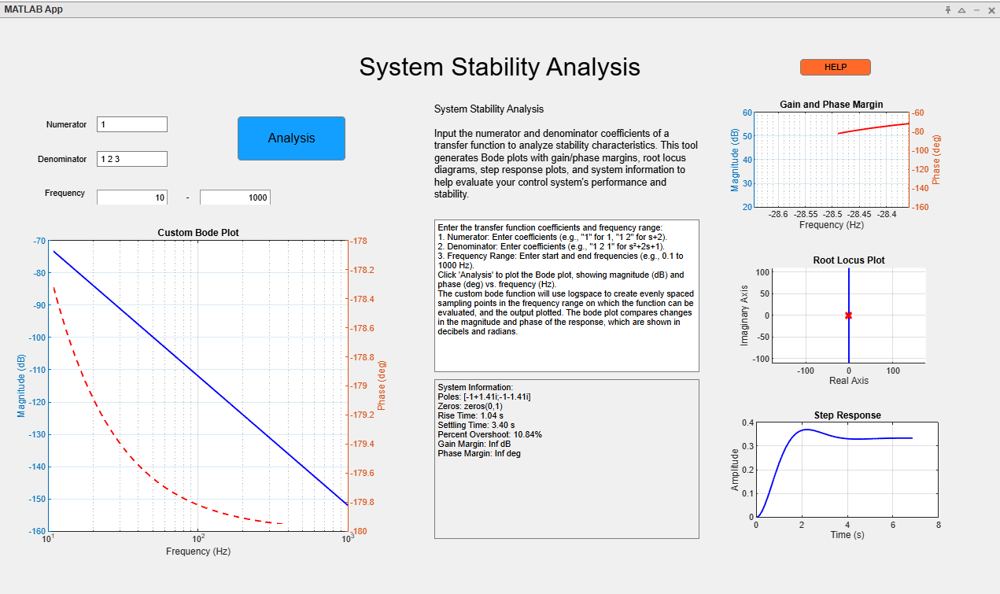
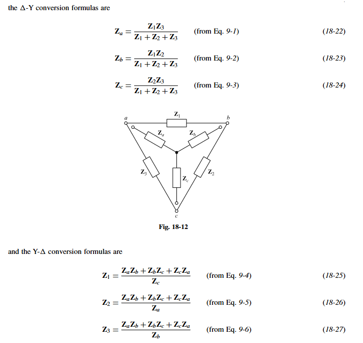
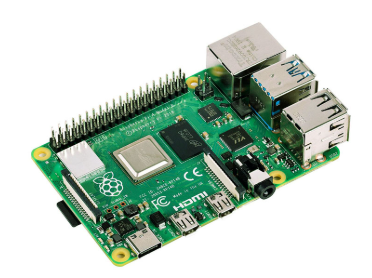

https://github.com/jbarber877/Bode
MATLAB-based graphical user interface (GUI) tool that allows users to input the numerator and denominator coefficients of a system's transfer function and analyze its stability. The tool displays the Bode Plot, Gain and Phase Margins, Root Locus, System Information, and Step Response for the given system.
https://jbarber877.github.io/delta-wye/
Delta (Δ) and Wye configurations are two common ways to connect three impedances or loads in a three-phase circuit. The choice of configuration affects the way current and voltage behave in the system, and it often depends on the desired application or equipment being used. In a Delta network, the three impedances are connected in a closed loop, forming a triangle. Each corner connects to a line terminal, and the impedance appears between any two phases. In a Wye network, each impedance connects from a common central point (the "neutral") outward to the three line terminals, forming a Y shape.

This repository is under construction. It will eventually hold several raspberry pi projects I am working on.